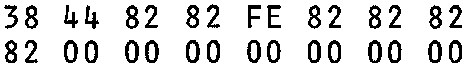
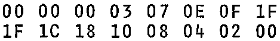

INMC 80 News |
June/July/August 1980 · Issue 1 |
| Page 16 of 48 |
|---|
The advent of the Nascom 2, with its graphics ability, the Econographics add-on kit giving similar facilites to the Nascom 1, and the much awaited and (as far as we know) imminent Programmable Character Generator, has made investigation into how the characters are formed on your monitor screen appropriate. The fact that the Nascom 2 and the Econographics both use a 2716 compatible ROM as the character generator, coupled with the new breed of cheap 2716 EPROM programmers means that character sets of your own are very easily prepared.
We don’t intend to discuss in detail exactly how the characters are sent to your screen, but to concentrate on the organisation of the character generator ROM (or in the case of the PCG, RAM). First, the ROM is a 2K device, hence has 11 address lines. Essentially what happens is that the hardware scans the video RAM which in turn produces 48 sequential addresses representing the 48 characters to be displayed on that row. 7 address lines are used for this, known as the Character Selects (CS0 – 6). Each address is applied to the character ROM causing a data byte to be output from the character ROM which is latched into a ‘parallel in/serial out’ shift register, and a clock shifts the data byte out bit by bit producing a pattern of 1s and 0s which represent white and black dots (respectively) on the screen. A row of characters is actually composed of 16 TV lines (14 on a Nascom 2, but it only skips that last two), and the remaining 4 address lines, known as the Row Selects (RS0 – 3), tell the character ROM which TV line it is on. Enough of this, it takes a fair amount of study of the circuits to understand it properly, and it’s not really important to the matter of programming a character set.
The important things are that a character is represented by 16 rows of 8 dots each. Each dot is one bit of a byte, so that the character can be represented by a total of 16 bytes. As there are 128 characters in a character ROM, each of 16 bytes, then the ROM must be a 2K device. Its not difficult to program a 2716 to make a special graphics EPROM, so all that remains is to find out how to program a character.
So to designing a special character. Take a piece of 0.1″ or 2mm graph paper, and mark off a rectangle 8 squares wide by 16 squares deep. Outline your character within the rectangle in pencil, then shade in the squares that your outline passes through. Stand back and examine the character from a distance to see if it looks right. If so then code the 16 bytes used, remember that a binary 0 is black, a binary 1 is white. (Don’t forget your monitor displays white on black.) See the attached diagram of a letter ‘A’. Note that in this instance the right hand column is left blank to allow for a space between characters, if characters were to be joined together, then no blank is required. The code for an ‘A’ is:

Notice the character is slightly broader than it will appear on the screen, due to the non-symetrical aspect ratio of the monitor screen. Any character may be built up in a similar fashion. Hence the evil looking ‘Space Invader’ on the right is built up of three characters as follows:

| Page 16 of 48 |
|---|